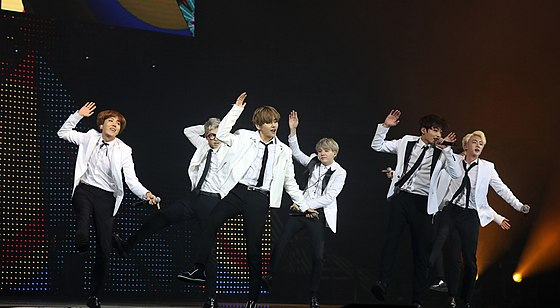
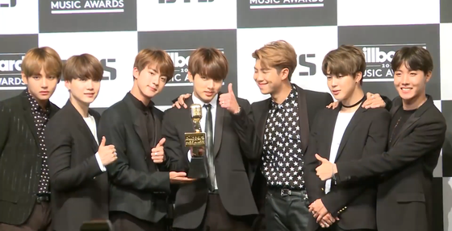

CAREER
2010-2014: FORMATION AND PRIMARY YEARS

BTS first began its formation in 2010 after Big Hit Entertainment CEO Bang Si-hyuk met with group leader RM and was impressed with his rapping.BTS was originally supposed to be a hip hop group similar to YG Entertainment's 1TYM, but between their initial formation and their debut, Bang Si-hyuk decided that the contemporary youth needed instead "a hero who can lend them a shoulder to lean on, even without speaking a single word". The group was meant to debut in 2011 and featured on several tracks by artists such as 2AM and Lee Seung-gi before their debut was postponed and the group was reorganized into a more traditional idol group.The lineup was then finalized with Jin, Suga, J-Hope, RM, Jimin, V, and Jungkook in 2012. Six months prior to their debut, they began to gain attention for their presence on various social media websites, as well as song covers on YouTube and SoundCloud.
On June 12, 2013, BTS released their debut single album 2 Cool 4 Skool, the first installment in their "school trilogy" series, simultaneously with its lead single "No More Dream", which peaked at number 124 in Korea before quickly falling off the charts.While the album peaked at number five in South Korea and eventually sold over 145,000 copies,it was not a major hit, selling only 24,000 copies in 2013.Their subsequent single “We Are Bulletproof Pt. 2” failed to chart. In 2 Cool 4 Skool, BTS employed an old-school hip-hop sound with scratches from the 1980s-90s and excessively fierce visuals.From their inception, BTS was convinced that telling their story was the only way for the younger generation to relate to their music.Thus, the lyrics of the album primarily reflected on the misunderstanding and prejudice towards them, criticism of the society that diminishes their dreams, and their anxiety and determination towards their future. During the production of the album, Suga and RM rewrote the lyrics of “No More Dream” more than 20 times.The single album's release was followed by several appearances on Korean music shows.Despite being unpolished, these early live performances demonstrated BTS' potential with their intense and charismatic stage presence.Expanding their endeavors to Japan, "No More Dream" was later re-recorded in Japanese and released in June 2014.
n September 2013, BTS released the second part to their "school trilogy,” the extended play O!RUL8,2?, along with its single "N.O,” which peaked at number 92 in Korea.The EP peaked at number four in Korea and has sold over 160,000 copies to date, including 34,000 copies in its release year.Musically, BTS did not fundamentally change their sound as compared with 2 Cool 4 Skool, utilizing fiery rapping along with trap beats, brass, and soulful melodies. Lyrically, the EP expanded on the theme of dreams and happiness, revealing their frustration under the harsh Korean education system and their determination to confront the struggle of proving themselves.Despite several performances on Korean music shows, the single quickly fell off the charts.That same month, BTS starred in their own variety show, SBS MTV's Rookie King Channel Bangtan, based on a fake broadcast station, "Channel Bangtan", through which members parodied variety shows such as VJ Special Forces and MasterChef Korea.At the end of the year, BTS was recognized with several New Artist of the Year awards, including the 5th Melon Music Awards, 28th Golden Disc Awards and the 23rd Seoul Music Awards.
2014-2015: SOME SUCCESS AND FIRST CONCERT TOUR
The last act to their "school trilogy", the EP Skool Luv Affair,[30] was released in January 2014 and topped the Gaon Album Chart, selling 100,000 copies in 2014 and over 250,000 copies overall.[31] It also marked BTS’ first appearance on Billboard's World Albums Chart, peaking at number three.[30][32] The album was supported by the singles "Boy in Luv" (Korean: 상남자; RR: Sang-namja) and "Just One Day" (Korean: 하루만; RR: Haruman), which peaked at number 45 and number 149 in Korea, respectively.[33] While Skool Luv Affair musically retained much of their hip-hop influences with the incorporation of R&B and hard rock, the album coincided with a thematic shift from dreams and happiness to love, focusing on school-age and youthful love.[34] Following Skool Luv Affair’s release, BTS made several appearances on Korean music shows and held their first fan meeting that March with an audience of 3,000 fans in Seoul.[35][36] That July, BTS held their first concert in the United States in West Hollywood for free to an audience of 200 fans.[37] In August, the group also made their first appearance at KCON in Los Angeles.[38] Despite being the newest artist on the list, BTS met such intense crowd reaction that Billboard noted they “wouldn’t be surprised to see a U.S. tour announced soon.”[39]
In August 2014, BTS released their first Korean studio album, Dark & Wild, which peaked at number two in Korea and sold over 200,000 copies total.[40] It was supported by two singles: "Danger" and "War of Hormone" (Korean: 호르몬 전쟁; RR: Horeumon Jeonjaeng), which peaked at number 58 and number 173 in Korea, respectively.[41] The album served as a narrative extension of the “school trilogy” and a transition into their next series. Musically, the album fused the grungy electric guitar sounds of rock within the framework of hip-hop and continued to expand their sound towards R&B. The central theme of the album’s lyrics focused on expressing the sentiments of maturing, youthful desires, and impatience for romance.[42] During production of the album, BTS recorded their single "Danger" in a makeshift studio in a garage in Los Angeles.[43] Following several appearances on Korean music shows, [44] BTS embarked on their first concert tour, 2014 BTS Live Trilogy – Episode II: The Red Bullet, from October to December, held in various halls and theaters in six cities: Seoul, Kobe, Tokyo, Manila, Singapore, and Bangkok.[45]
Their first Japanese studio album, Wake Up (2014), released that December, peaked at number three on the weekly Oricon Albums Chart and sold 28,000 copies.[46] Along with re-recorded Japanese versions of older songs, it also contained the original tracks "Wake Up" and "The Stars."[47]In support of the album, BTS held their 1st Japan Tour 2015 Wake Up: Open Your Eyes in February 2015 to an audience of 25,000 fans in four cities.[48] After successfully ending their Japan tour, BTS held their second solo concert in Korea, BTS Live Trilogy – Episode I: BTS Begins, in March to a crowd of 6,500 fans.[49]
2015-2016: MAINSTREAM BREAKTHROUGH AND COMMERICAL SUCCESS
Following the moderate success of their "school trilogy", BTS took a risk and made a significant shift to their sound and image. Rather than being the encompassing concept, hip hop became only one of their many musical aspects and the vocals began to emerge more prominently in their music as they moved away from their previous aggressive, masculine image. For their next series, BTS wanted to express the beauty and anxiousness of "youth" and settled on the title of "花樣年華," which can be loosely interpreted to define "youth" as "the most beautiful moment in life."
Released in March 2015, their third EP, The Most Beautiful Moment in Life, Part 1, began by "shining a light on the dimmer and overshadowed dangers of youth rather than focusing on the beautiful aspects."[51][52] While the album initially explored the growth and emotional agony of youth, it ultimately culminated in a depiction of youth's playful and uplifting sides.[50] For those who felt BTS' previous sound was too aggressive at times, it was considered a solid offering, with Fuse including it as the only Korean album on their list of the "27 Best Albums of 2015 So Far."[53] The Most Beautiful Moment in Life, Part 1 has sold over 415,000 copies to date.[54] The lead single "I Need U" was BTS' first top five hit in Korea[55] and garnered BTS their first ever music show win on SBS MTV's The Show.[56] Although their second single, "Dope (Korean: 쩔어; RR: Jjeoreo)", peaked at number 44 in Korea,[57] its music video became BTS' first to accrue over 100 million views on YouTube in October.[58] "Dope" later peaked at number three on Billboard's World Digital Songs Chart.[59] In May, Twitter launched its first ever K-pop emoji, featuring BTS.[60] Following several Korean music show appearances, BTS commenced in June their first world tour, the 2015 Live Trilogy Episode: The Red Bullet, visiting halls and theaters in various cities throughout Asia, Oceania, North America, and Latin America.[45] During their tour, BTS released their fourth Japanese single, "For You", to celebrate the first anniversary of their Japanese debut in June. The single topped Oricon's daily chart, selling over 42,000 copies within its first day.[61] They also participated in the Summer Sonic Festival tour in Japan that August.[62][63]
In November 2015, BTS launched their three-city concert tour, The Most Beautiful Moment in Life: On Stage, in conjunction with their fourth EP The Most Beautiful Moment in Life, Part 2, which was later released after completion of their Seoul dates. During their three-day Seoul concert, the group performed their new song "Run", the lead single of their new EP.[64] Thematically, this EP focused more on the serious and speculative aspects of youth, and was lyrically more profound and thoughtful, touching on the pursuit of success, loneliness, affection for their origins, and the suffering of the younger generation due the unfavorable conditions in current society. Critically, it was praised as the successful merging of the style of The Most Beautiful Moment in Life, Part 1 with BTS' initial identity.[65] The album topped the weekly Gaon Album and Billboard World Albums charts and remained atop the latter for multiple weeks, making BTS the first K-pop act to achieve that feat.[66][67] It also marked BTS' first appearance on the Billboard 200 chart, peaking at number 171 with over 5,000 copies.[68] At the 17th Mnet Asian Music Awards, they received the Best World Performer in recognition of their international fan base.
As the finale to their "youth series," BTS released their first Korean compilation album The Most Beautiful Moment in Life: Young Forever in May 2016, which combined a number of songs from both The Most Beautiful Moment in Life, Part 1 (2015) and The Most Beautiful Moment in Life, Part 2 (2015) and included three new singles: the top 40 hit "Epilogue: Young Forever", the top 10 hit "Fire" (Korean: 불타오르네; RR: Bultaoreune), and the top 20 hit "Save Me".[69][70] The album topped Gaon Weekly Chart in Korea for two consecutive weeks and peaked at number 107 on the U.S. Billboard 200.[71][72][73] This album was critically considered to be a key breakthrough and one of the most important albums of their career, able to achieve a balance between popular appeal while maintaining BTS' signature sound and raw youthful energy. The track "Epilogue: Young Forever," RM's first producing effort, was considered a "masterpiece that condenses the essence and sentiment of all the themes of the youth series."[74]The Most Beautiful Moment in Life: Young Forever later went on to win BTS' first major Korean award for Album of the Year at the 8th Melon Music Awards.[75] Following Korean music show appearances, BTS embarked on their Asia tour, 2016 BTS Live The Most Beautiful Moment in Life On Stage: Epilogue, from May to August, visiting 10 cities and performing to 144,000 fans.[76] During their tour, BTS held a landmark two-day concert at the Olympic Gymnastics Arena in Seoul in May,[77] and the group performed as headliners for the first time at both U.S. KCON shows held that year in Newark (June) and Los Angeles (July), to sold out audiences.[78][79]
In September 2016, BTS released their second Japanese studio album Youth, which included re-recorded Japanese versions of a number of songs from their "youth series" and Japanese editions of "I Need U" and "Run" as singles.[80] The album sold over 44,000 copies on its first day of release and peaked at number one in Japan.[81]
Back in their home country, BTS began pre-orders for their second Korean studio album, Wings, accumulating over 500,000 copies within the first week.[82] Wings revealed BTS' most mature transformation yet, combining the themes of youth presented in the "youth series" with temptation and adversity. Attempted for the first time in their career as a major effort, the distinctive solo tracks included on the album demonstrated each members' potential and individuality as independent musicians.[83] Released in October 2016, Wings was generally well-received by critics. Nick Murray of Rolling Stone named Wings "one of the most conceptually and sonically ambitious pop albums of 2016,"[84] while Fuse praised the album's "vulnerable and honest song material" and diverse tracks.[85] Commercially, BTS also hit new career heights. The lead single "Blood Sweat & Tears" achieved a chart "all-kill" in South Korea,[86] becoming their first number one hit on the weekly Gaon Digital Chart.[87] Its music video gained over 6 million views within 24 hours, breaking the previous record held on YouTube for the highest number of views of a K-pop group music video within 24 hours.[88] At that time, Wings became the best-selling album in the Gaon Album Chart history in South Korea[89] and marked the highest chart ranking ever for a K-pop album on the U.S. Billboard 200 at number 26.[90] Wings sold more than 1.5 million copies that year, making it BTS' first "million seller".[91] BTS also became the first Korean group to top the Billboard Social 50 chart that month.[92] At the end of the year, BTS won Artist of the Year at the 18th Mnet Asian Music Awards,[93] becoming the first artist not from a "Big Three" entertainment company (SM, YG and JYP) to do so.[94]
2017: INTERNATIONAL EXPANSION AND SUCCESS
In February 2017, BTS released the repackaged edition of Wings (2016), entitled You Never Walk Alone. Pre-orders of the repackage reached over 700,000 copies, breaking the record for most albums sold in a month.[95][96] The repackage included an additional four tracks that offered consolation and encouragement to its listeners.[97] Its lead single, "Spring Day" (Korean: 봄날; RR: Bomnal) met critical praise as "an intelligent, compelling and elegantly restrained study of loss and longing" that "deliberately avoids cliché pomp and drama" by Dazed Digital.[98] Embodying nostalgia and sorrow, it is considered one of BTS' most important songs, opening a new chapter in BTS' aesthetics and lyricism and attracting fans across generational boundaries.[83] Upon release, "Spring Day" topped eight of the major South Korean online music charts, as well as Gaon,[99][100] and crashed Melon's digital chart due to the high influx of user traffic.[101] It also entered the U.S. Billboard's Bubbling Under Hot 100 singles chart at number 15 with "zero promotions."[102] As evidence of its staying power, "Spring Day" is the longest-charting song on Melon by an idol group to date.[103] "Spring Day" later won Best Song of the Year at the 9th Melon Music Awards.[104][105].
n conjunction with the release of You Never Walk Alone, BTS commenced their second world tour, 2017 BTS Live Trilogy Episode III: The Wings Tour, from February to December. The tour visited 12 countries including Brazil, Australia, Japan, Hong Kong, and the United States and gathered 550,000 fans.[106] On the tour, BTS began to play progressively larger venues, moving from halls into arenas and domes. Tickets for the North American leg sold out within minutes and two additional shows were added due to high demand, making BTS the first K-pop act to sell out arenas in the United States.[107][108] After completing their North American leg, BTS attended the 24th Billboard Music Awards in May and won Top Social Artist, becoming the first Korean group awarded a Billboard Music Award.[109]
Celebrating Korean music icon Seo Taiji's 25th anniversary as a part of his anniversary project "Time: Traveler", BTS released a remake of Seo Taiji's 1995 classic "Come Back Home" in July 2017, reworking the sound and lyrics to similar sentiments toward societal change that Seo Taiji argued for in his songs.[110] BTS was later invited by Seo Taiji to perform as backup vocalists and dancers for eight songs in his Seoul Olympic Stadium concert held early September. During the concert, Seo Taiji acknowledged BTS' thematic similarities to his music and recognized the group as his musical successors, declaring, "This is your generation now. Show them."[111][112]
Following the depiction of growth and temptation in Wings (2016) and consolation in You Never Walk Alone (2017), BTS embarked on their "Love Yourself" series which sought the enlightenment of self-love through the "起承轉結" narrative sequence of "beginning, development, turn, and conclusion."[113] In September 2017, BTS released the first part of the series, their fifth EP, Love Yourself: Her[114] and featured music from the Chainsmokers' Andrew Taggart for the track "Best of Me".[115] The EP was supported by two singles: the lead single "DNA" and a Steve Aoki remix of their song "Mic Drop" featuring American rapper Desiigner. In the narrative sequence, the EP represented the "承," or "development" of the series and is considered one of the major turning points in BTS' career.[116] Within the larger narrative, Love Yourself: Her describes the joy and happiness of falling in love.[113] Sonically, the EP served as "a dual exploration of the group's electro-pop and hip-hop leanings," with the first half consisting of “dance tracks that emphasize the group's vocals" while in the second half "the act's hip-hop side arrives in earnest...delivering powerful rap performances."[117]
2018: WORLDWIDE RECODNITION

In conjunction with Love Yourself: Answer's release in August 2018, BTS commenced their third world tour, BTS World Tour: Love Yourself, with a landmark concert in the Seoul Olympic Stadium, the largest stadium in South Korea.[178] During their tour, BTS also featured on Steve Aoki's single "Waste It On Me" released that October, which was their first and only all-English language feature.[179][180] On tour, BTS continued to play to progressively larger venues from arenas to domes to stadiums. For the final stop of the North American leg, the band performed at Citi Field, marking the first time a Korean act has performed at a U.S. stadium.[181] All 40,000 tickets for the stadium date sold out in under 20 minutes.[182] According to StubHub BTS was one of 2018's best-selling concerts in international markets outside the US, second to only Ed Sheeran.[183] Vivid Seats named BTS the 2018 artist of the year, citing the group's history-making concert at Citi Field.[184] The tour also received generally positive reviews from critics. Philip Cosores from Uproxx described BTS' four nights at the Staples Center as an "enormous, multi-sensory experience" bringing an "inclusive" and "multicultural experience" where music is above any language barrier,[185] while Crystal Bell from MTV said "BTS have created an experience so captivating, so inclusive, and so visually stunning that it’s cemented the boy band as one of the most vital acts in pop music today."[186] That October, with more than a year remaining in their contract, BTS renewed their contract with Big Hit Entertainment through 2026.[187]
SOURCE: https://en.wikipedia.org/wiki/BTS_(band)